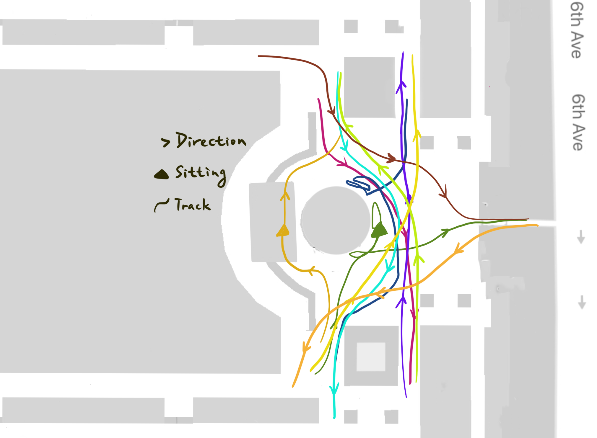
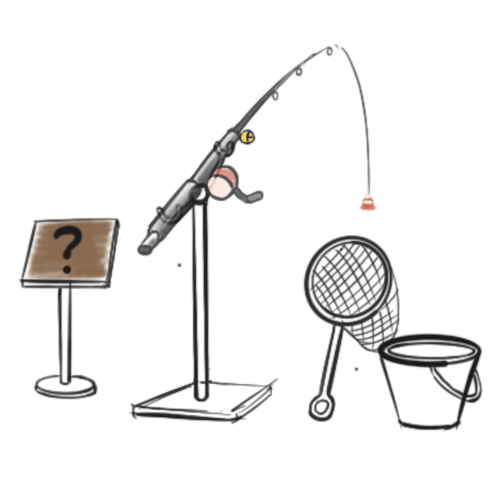
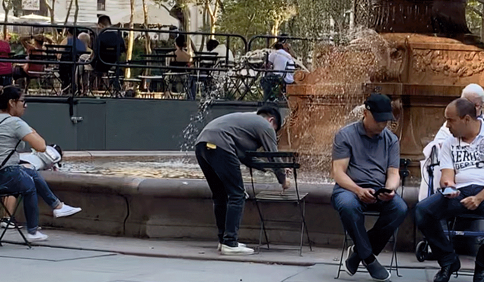
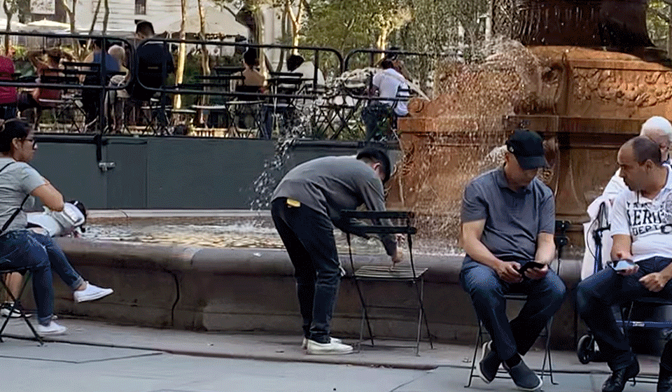

Why Bryant Park?
Bryant Park is one of the few parks that are mostly enjoyed by local New Yorkers. Being surrounded by many office buildings, schools, and New York Public Library, you can find many students and young professionals hanging out at the park. However, the park is also a great place for kids and the elderly. Throughout the year Bryant Park hosts various activities including sports tournaments, painting sessions, dancing classes and much more. Bryant Park is a condensed epitome of New York itself: people from all different age groups, cultures and backgrounds exist harmoniously all in one place.
Design Methods

Observations & Behavior Mapping

After walking around the park and observing all the different activities, we came to this realization that - while Bryant Park is able to bring all different kinds of people together, they rarely interact with one another - there isn't much reason to.We'd like to give them a reason. A lot of people describe New Yorker as rude, cold-hearted and impatient. We want to find out if that really is the case.
Observation of Ping Pong:
- Time: 12:00 - 12:40 pm
- Participant: 10 people
- Read instructions/ask staff: 12 people
- Stop to watch: 43 people
- Help to pick up balls: 31 people
- Participants:
- Most participants come regularly and they know each other, kind of shaping a community. Few are new to this game.
- The game is easily affected by wind.
- For those “irregular” participants, they always sign up and play with their friends coming along.
- Passersby:
- Some of them would interact with the participants by picking ping-pong coincidently.
- Some of them were interested in joining the game but left because they need to sign in and wait for taking turns(10 minutes).
- A lot of people would stop to watch the game for a while.
Observation of Knitting:
Knitting was one of the activities that stood out for us. Knitting is known as a long, repetitive process that requires a lot of patience and commitment from one person. Usually we associate this activity with moms or grandmas.
- Contributed by many different people from different background/culture/generation
- Short commitment - stitch one and go
- Free form
- Visual interactions
Observations at the Fountain:
How can we reignite people's curiosity for a daily object/architect/environment?


Brainstorm


Concept Sketch
Inspired by knitting

Interaction with the fountain

On-site Prototype
 

Expectations vs Reality